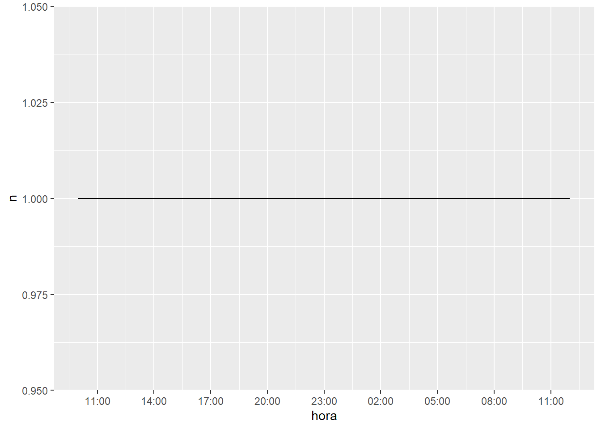

08B - Web APIs
Como al principio de todo script, recomiendo reiniciar R. Esto lo conseguimos en RStudio Cloud con Session > Restart R y clickeando en la escoba del panel de “Environment” (superior derecho).
Inicio: cargar paquetes
##
## Attaching package: 'lubridate'## The following objects are masked from 'package:base':
##
## date, intersect, setdiff, unionComo vimos en el script anterior, es posible hacer web scraping en R con el paquete rvest. Sin embargo, algunos sitios prohiben el web scraping y, en cambio, ponen (algunos de) sus datos a disposición del público a través de una Web API. En general, estos son sitios grandes con muchísimo flujo (Twitter, Facebook, Reddit, Wikipedia, etcétera). Las Web APIs también sirven para interactuar en general con estos sitios, por ejemplo, para postear contenido automáticamente (¿bots?).
A continuación veremos cómo acceder a la Web API de Twitter, por medio del paquete rtweet.
Las dos funciones más importantes de rtweet son las siguientes:
search_tweets()buscará los tweets más recientes según un query (criterio de búsqueda): usualmente queremos buscar hashtags o términos comunes. Esto tiene dos limitaciones:- Primero, no siempre devuelve el número exacto de tweets que pedimos. Así lo explica el archivo de ayuda de la función: “[n]umber of tweets returned will often be less than what was specified by the user. This can happen because (a) the search query did not return many results (the search pool is already thinned out from the population of tweets to begin with), (b) because user hitting rate limit for a given token, or (c) of recent activity (either more tweets, which affect pagination in returned results or deletion of tweets)”.
- Segundo, tiene una ventana de 6-9 días de alcance. Solo podemos buscar fenómenos recientes, en otras palabras.
get_timelines()nos permite obtener todos los tweets públicos de 1+ usuarios/as de Twitter.- Solo permite acceder a los 3200 tweets más recientes.
install.packages("rtweet")
library(rtweet)
tweets_busqueda <- search_tweets(
q = "sernac", n = 10000, include_rts = FALSE
)
tweets_cuentas <- get_timelines(
user = c("sebastianpinera", "mbachelet", "ricardolagos"), n = 300
)tweets_busqueda <- read_rds("datos/tweets_busqueda.rds")
tweets_cuentas <- read_rds("datos/tweets_cuentas.rds")Los datos vienen en un formato muy ameno (una base de datos). Por ejemplo:
## # A tibble: 2,765 x 2
## screen_name text
## <chr> <chr>
## 1 sebastianpinera "Millones de chilenos están en cuarentena. Para acompañarlos en este #DiaDelPatrimonioEnCasa preparamos esta guía con mucho cariño para su familia, que incluye lo mejor de la cultura, naturaleza y maravillas de Chile y el mundo. E~
## 2 sebastianpinera "[VIVO] Pdte da inicio a jornada de distribución de suministros del plan #AlimentosParaChile https://t.co/PXfxrwOWQQ"
## 3 sebastianpinera "Este año celebramos de forma diferente nuestro #DíaDelPatrimonioEnCasa. \n\nHoy debemos cuidarnos, pero la tecnología nos permite conmemorarlo de forma virtual, por eso los invito a esta visita guiada donde les mostraré los lugar~
## 4 sebastianpinera "Hoy comenzó pago del #IngresoMínimoGarantizado q beneficiará con un complemento de hasta $59.200 mensuales a 700 mil trabajadores dependientes de bajos ingresos. \n\nEste beneficio es parte de la Red de Proteccion Social q juntos~
## 5 sebastianpinera "Una sociedad no puede vivir con temor. \n\nJunto con valorar avances, redoblamos nuestro compromiso y esfuerzo en lucha contra delincuencia. \n\nInauguramos #NuevasTecnologíasPoliciales para combatir con más eficacia delincuencia~
## 6 sebastianpinera "Tendremos tolerancia 0 frente a cualquier tipo de agresión o maltrato contra la mujer.\n\nAgradezco a ministra @macasante quien lidera proyecto de Ley de #MonitoreoTelemático que le impide al agresor acercarse a su víctima. https~
## 7 sebastianpinera "Tengo plena fe que como chilenos nos pondremos de pie y saldremos adelante. Juntos hemos superado tantas adversidades y esta vez volveremos a hacerlo.\n\nDepende de ti. Depende de nosotros.\n\n#RespetemosLaCuarentena https://t.co~
## 8 sebastianpinera "Red de #ResidenciasSanitarias q hemos construido en Chile provee alojamiento, alimentación, cuidados básicos y trato digno para quienes no pueden tener el aislamiento necesario en sus propios hogares.\n\nEsta red los protege a el~
## 9 sebastianpinera "Para continuar conversando sobre estos temas mañana me reuniré con Presidentes de partidos de Chile Vamos y jefes de bancada. \n\nEs importante avanzar juntos hacia un acuerdo que nos permita superar estas pandemias. Los escuchar~
## 10 sebastianpinera "CUARTO: Plan de Reactivación Económica, con énfasis en creación de empleos, mejorar salarios e incrementar inversión\n\nQUINTO:Plan Fiscal para enfrentar necesidades presentes y desafíos futuros q permita recuperar equilibrio fis~
## # ... with 2,755 more rowsPodemos ocupar todas las herramientas que hemos aprendido en el curso para analizar sus distintas variables. Aquí es importante la información temporal (fecha/hora), ocuparemos algunas funciones del paquete lubridate (parte del tidyverse) para trabajar con esto.
Comencemos haciendo algunas modificaciones en la base de tweets sobre el SERNAC:
tweets_busqueda2 <- tweets_busqueda %>%
mutate(
# pasar a la zona horaria de Santiago (por defecto está en UTC)
created_at = with_tz(created_at, "America/Santiago"),
# crear variable de hora, que nos permitirá agregar
hora = floor_date(created_at, "hour")
) %>%
# solo quedarnos con mensajes desde ayer
filter(created_at >= as_datetime("2020-11-11"))Podemos graficar el conteo de tweets por hora:
ggplot(tweets_busqueda2 %>% count(hora),
aes(x = hora, y = n)) +
geom_line() +
# en el eje x queremos cortes cada tres horas:
scale_x_datetime(date_breaks = "3 hour",
date_labels = "%H:%M")
Ahora pasemos a la otra base:
## # A tibble: 3 x 2
## screen_name n
## <chr> <int>
## 1 mbachelet 848
## 2 RicardoLagos 918
## 3 sebastianpinera 999## `summarise()` ungrouping output (override with `.groups` argument)## # A tibble: 3 x 2
## screen_name min_fecha
## <chr> <dttm>
## 1 mbachelet 2016-10-07 10:43:30
## 2 RicardoLagos 2010-05-31 15:15:11
## 3 sebastianpinera 2018-07-03 19:56:17¿Por qué vemos este patrón?
Vamos a corregirlo:
tweets_cuentas2 <- tweets_cuentas %>%
# pasar a la zona horaria y filtrar tweets desde el 18O:
mutate(created_at = with_tz(created_at, "America/Santiago")) %>%
filter(created_at >= "2019-10-18")
tweets_cuentas2 %>%
count(screen_name)## # A tibble: 3 x 2
## screen_name n
## <chr> <int>
## 1 mbachelet 189
## 2 RicardoLagos 45
## 3 sebastianpinera 359Ahora podemos hacer cualquier análisis que nos interese. Por ejemplo, cuándo fueron los primeros tweets de cada cuenta (desde el 18/O).
tweets_cuentas2 %>%
group_by(screen_name) %>%
filter(created_at == min(created_at)) %>%
ungroup() %>%
select(created_at, screen_name, text)## # A tibble: 3 x 3
## created_at screen_name text
## <dttm> <chr> <chr>
## 1 2019-10-19 00:13:02 sebastianpinera [EN VIVO] https://t.co/XAXPzmUgqn
## 2 2019-10-21 12:54:46 mbachelet Estoy muy preocupada y triste de ver violencia, muertes y lesiones en #Chile. Exhorto al Gobierno a trabajar con todos los sectores y encontrar soluciones para abordar agravios. Urjo a los que planean participar~
## 3 2019-10-23 09:39:33 RicardoLagos Tenemos que encontrar el rumbo para lograr un consenso que convoque a chilenos y chilenas, representantes de los partidos políticos y de los sectores vivos de la ciudadanía, que permita construir un nuevo pacto ~Google Trends
## Warning: package 'gtrendsR' was built under R version 4.0.3Vamos a explorar búsquedas por organismos de DDHH en los últimos doce meses:
orgs_ddhh <- gtrends(keyword = c("Human Rights Watch",
"Amnistía Internacional",
"CIDH",
"INDH"),
geo = "CL", time = "today 12-m")
df_orgs_ddhh <- as_tibble(orgs_ddhh$interest_over_time)Arreglemos la columnas de fechas:
ggplot(df_orgs_ddhh2,
aes(x = date, y = hits, group = keyword, color = keyword)) +
geom_line() +
ggthemes::scale_color_colorblind() +
# cortes en el eje x cada dos meses
scale_x_date(date_breaks = "2 months",
date_labels = "%m/%y")
Google Scholar
Otra Web API sencilla es la de Google Scholar. Por ejemplo, podemos obtener la lista de publicaciones de Elinor Ostrom:
install.packages("scholar")
library(scholar)
elinor_ostrom <- get_publications("RKN66-kAAAAJ") %>%
as_tibble()
elinor_ostrom## # A tibble: 1,204 x 8
## title author journal number cites year cid pubid
## <fct> <fct> <fct> <fct> <dbl> <dbl> <fct> <fct>
## 1 "Governing the commons: The evolution of institutions for collective action" E Ostrom Cambridge university press "" 39685 1990 3890556834294913616,13417789038701955244 u5HHmVD_~
## 2 "The science of\" muddling through\"" CE Lindblom Public administration review "79-88" 14704 1959 12697815037321572847 QNfnWKgK~
## 3 "Understanding institutional diversity" E Ostrom Princeton university press "" 8179 2009 15101681925026143505,133323073711233491~ ThYxFsVA~
## 4 "Rules, games, and common-pool resources" E Ostrom, R Gardner, J Walker, JM Walker, J ~ University of Michigan Press "" 5760 1994 8192222936357315454,10895932034490496719 u-x6o8yS~
## 5 "A general framework for analyzing sustainability of social-ecological systems" E Ostrom Science "325 (5939), 41~ 5393 2009 10357978884305814464 3fE2CSJI~
## 6 "Collective action and the evolution of social norms" E Ostrom Journal of economic perspec~ "14 (3), 137-15~ 4356 2000 494656908153206772 qjMakFHD~
## 7 "The struggle to govern the commons" T Dietz, E Ostrom, PC Stern science "302 (5652), 19~ 4353 2003 14836008273418948812,6886193046964774027 TPlbvKeU~
## 8 "A behavioral approach to the rational choice theory of collective action: Presidential add~ E Ostrom American political science ~ "92 (1), 1-22" 4229 1998 14706553558091068945,170343611817159876~ 9yKSN-GC~
## 9 "Linking social and ecological systems: management practices and social mechanisms for buil~ F Berkes, C Folke, J Colding Cambridge University Press "" 4055 2000 1448813686244049658 CdxZDUzt~
## 10 "Resilience and sustainable development: building adaptive capacity in a world of transform~ C Folke, S Carpenter, T Elmqvist, L Gunderso~ AMBIO: A journal of the hum~ "31 (5), 437-44~ 3394 2002 16289318559207801846 CmbFvBri~
## # ... with 1,194 more rowsCuriosamente, entran artículos de otros autores (probablemente porque Ostrom estuvo en el proceso de edición, o algo por el estilo). Podemos hacer un filtro para limpiar la base:
## # A tibble: 879 x 8
## title author journal number cites year cid pubid
## <fct> <fct> <fct> <fct> <dbl> <dbl> <fct> <fct>
## 1 Governing the commons: The evolution of institutions for collective action E Ostrom Cambridge university pre~ "" 39685 1990 3890556834294913616,13417789038701955244 u5HHmVD_~
## 2 Understanding institutional diversity E Ostrom Princeton university pre~ "" 8179 2009 15101681925026143505,13332307371123349123 ThYxFsVA~
## 3 Rules, games, and common-pool resources E Ostrom, R Gardner, J Walker, JM Walke~ University of Michigan P~ "" 5760 1994 8192222936357315454,10895932034490496719 u-x6o8yS~
## 4 A general framework for analyzing sustainability of social-ecological systems E Ostrom Science "325 (5939), 419~ 5393 2009 10357978884305814464 3fE2CSJI~
## 5 Collective action and the evolution of social norms E Ostrom Journal of economic pers~ "14 (3), 137-158" 4356 2000 494656908153206772 qjMakFHD~
## 6 The struggle to govern the commons T Dietz, E Ostrom, PC Stern science "302 (5652), 190~ 4353 2003 14836008273418948812,6886193046964774027 TPlbvKeU~
## 7 A behavioral approach to the rational choice theory of collective action: Presidential address, ~ E Ostrom American political scien~ "92 (1), 1-22" 4229 1998 14706553558091068945,17034361181715987693~ 9yKSN-GC~
## 8 Revisiting the commons: local lessons, global challenges E Ostrom, J Burger, CB Field, RB Norgaa~ science "284 (5412), 278~ 3251 1999 1543491137003347668 IjCSPb-O~
## 9 Beyond markets and states: polycentric governance of complex economic systems E Ostrom American economic review "100 (3), 641-72" 3123 2010 2976854498562800954 GnPB-g6t~
## 10 Property-rights regimes and natural resources: a conceptual analysis E Schlager, E Ostrom Land economics "249-262" 2873 1992 5774084778917733435,16959520377304276402 Tyk-4Ss8~
## # ... with 869 more rowsBastián González-Bustamente usó datos de Google Scholar para mapear a la ciencia política académica chilena.
Otras Web APIs
sinimrpara extraer datos desde el Sistema Nacional de Información Municipal (SINIM).lobbyRpara extraer información disponible a través de la Ley de Lobby.owmrpara obtener datos de climáticos desde Open Weather Map.gmailrpara leer y enviar mails, enviar borradores, etc., usando Gmail.googlesheets4para interactuar con planillas de Google Docs.airtablerpara interactuar con planillas de Airtable (muchas más funciones disponibles que Google Sheets).pastebinpara extraer datos desde Pastebin.RedditExtractoRpara conseguir datos desde Reddit.
Ejercicios
Analiza el texto de las tres cuentas de Twitter que obtuvimos. ¿Cuáles son las palabras más distintivas de c/u?
Realiza alguna otra búsqueda de términos en Google Trends y grafica sus resultados.